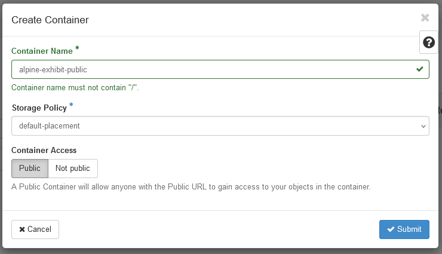
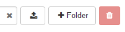
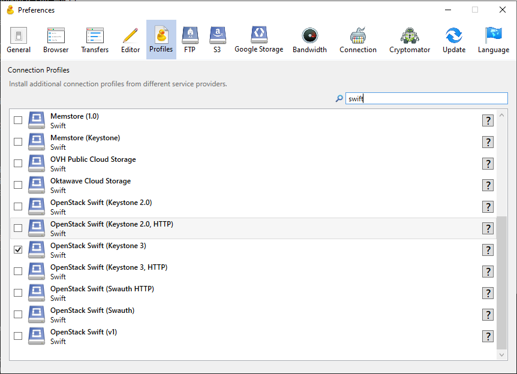
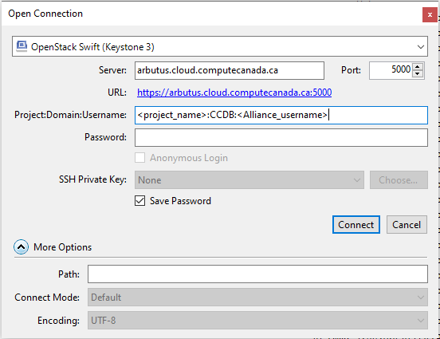
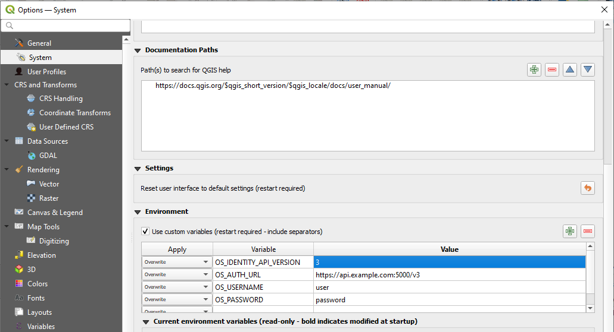

Object Storage
Object storage, also known as blob storage or even S3 storage in the context of cloud computing as it has become synonymous with Amazon’s Simple Storage Service (S3), can provide a cheap and easy-to-implement solution for storing and sharing files of widely varying sizes.
Cloud-based object storage can fluently handle file uploads when working with extraordinarily large files while reducing opportunities for data loss by providing an extremely high level of redundancy and durability. Once files are stored in an object storage bucket/container, they can be made publicly available without needing to setup and configure a web server.
Common use cases include:
Storing and serving geospatial datasets, particularly those that are cloud-optimized
Backing up research data
Storing and hosting media assets (images, audio, video, etc.)
Hosting static websites generated by tools like Jekyll, CollectionBuilder, or Quarto
S3-Compatible Clients
Most cloud-based object storage providers support Amazon’s S3 API meaning that they can be accessed and managed via an S3-compatible client. If you are using multiple cloud storage providers, these are helpful tool to get familiar with.
UBC ARC Chinook
UBC faculty members can access object storage via UBC ARC’s Chinook platform. Overall storage capacity is determined by allocation awards while individual files stored on the platform can be up to 5 TB. While Globus remains the recommended tool for managing object storage on Chinook, an S3 API can be enabled upon request thus giving you the ability to use the noted S3 clients above.
For more details about Chinook, see: Research Data Storage
Digital Research Alliance (DRA)
Faculty across Canada can also access up to 10 TB of object storage via DRA Cloud’s Arbutus data centre (University of Victoria) by submitting a Rapid Access Service (RAS) request. If those limits are not sufficient, additional resources can be requested through the annual Resource Allocation Competition (RAC) with applications due between late September and early November. Upon approval, RAC resources are granted the following April.
You can additionally use the RAS request form to share access to your Arbutus storage with other Alliance users, including sponsored staff and graduate students.
The Alliance doesn’t provide backups or redundancy for object storage, so if plan on storing any data on Arbutus be sure to retain at least one copy on your local machine and preferably another copy on a local backup drive.
Once the Alliance has fulfilled your RAS request and allocated you with a new project. You’ll be able start managing your project by signing in to the Arbutus Dashboard using your Alliance username and password.
Before you can start uploading files, you’ll need to first create a new container. You can think of a container as a folder or directory in which you’ll be storing your uploaded files. Within the Arbutus Dashboard, the button for creating a new container can be found under Project > Object Store > Containers. When you create a new container, you’ll be prompted to provide a container name, select a storage policy, and identify whether the container should be public.

Arbutus uses container names when generating URLs for all files stored within it. This means your container name will need to be unique and should be URL-friendly. A good example of a container name avoids symbols and spaces to ensure generated URLs avoid unnecessary encoding and are easier to read while also noting if the contents of the container are public and open for anyone to view via their URL.
Once a container has been created, you can select it and start uploading files using the upload button and begin creating sub-folders to help organize your files.

The Arbutus Dashboard can work well for completing basic tasks like creating new containers and uploading small individual files, but for more advanced use cases, like needing to upload files that exceed 500 MB or wanting to upload multiple files at once, you’ll want to install one of the S3-compatible clients listed above or alternatively an OpenStack Swift connector or client.
Cyberduck OpenStack Swift Connector
Cyberduck provides one of the easiest-to-use clients for connecting to Arbutus Object Storage on Windows or MacOS.
By default, Cyberduck does not include the OpenStack Swift connector, but it can be easily added within Cyberduck, by navigating to Edit > Preferences.. > Profiles and then checking ‘OpenStack Swift (Keystone 3)’.

You’ll then be able open a new connection to Arbutus using that connector and the Identity API with the following values:
- Connector: OpenStack Swift (Keystone 3)
- Server: arbutus.cloud.computecanada.ca
- Port: 5000
- Project:Domain:Username: <your_project_name>:CCDB:<your_Alliance_username>
- Password: <your_Alliance_password>

OpenStack Swift Client
OpenStack provides an official client for Swift services that can be installed via Python. This tool is not recommended for Windows environments, but it can provide a powerful CLI tool for MacOS and Linux users who are familiar with the Bash shell.
# Install the openstack-swift CLI tool via Python
python -m pip install openstack-swift
# Download OpenStack RC File from the DRA OpenStack Dashboard via Project -> API Access -> Download OpenStack RC File
# Store your DRA Project credentials as environment variables with the downloaded shell script
source <project name>-openrc.sh
# Start uploading files/directories to your object storage container/bucket
swift upload <your_container_name> <path_to_directory>QGIS - Accessing Objects (Files) in a Private Container/Bucket
While any data stored in a public container/bucket can easily be accessed and imported into QGIS using an HTTPS URL, private data can also be accessed given QGIS has access to your object storage credentials.
OpenStack Swift
Similarly to using the OpenStack Swift client, you’ll need to download your OpenStack RC file from the dashboard by navigating to Project -> API Access -> Download OpenStack RC File. The RC file will include important and sensitive authentication information so be sure to properly secure it. You will need to extract the environment variables held in this file and enter them into QGIS by opening Settings -> Options… -> System -> Environment. Be sure to check the box to use custom variables and start copying in the variables from the RC file.

Once you have copied your credentials, you will need to restart QGIS. You can then load a file from your OpenStack container by adding the layer using the OpenStack Swift Object Storage protocol type along with providing the name of the container in which the file is stored and the name of the file as the object key (note: if the file is stored in a subdirectory, the name of the directory will need to be included)
S3-Compatible
The process for using an S3-compatible object storage provider, is similar to that listed above, but instead of using an OpenStack RC file and environment variables, you will need to set the following custom environment variables in QGIS, which can be attained from any S3-compatible object storage provider.
- AWS_SECRET_ACCESS_KEY
- AWS_ACCESS_KEY_ID
Finally, while importing your file as a layer, you will need to use the AWS S3 protocol type.
Commercial Cloud Object Storage Providers
If neither the Alliance Cloud or Chinook provide sufficient features or you plan on using a particular cloud computing service that is only available through a commercial cloud provider, you can access object storage directly through commercial cloud providers.
Contact UBC ARC to get details about accessing credits that can mitigate costs associated with using the following cloud providers.
If you are working with an organization outside of UBC and/or are unable to access credits to help cover the costs of object storage, the following providers have generous free tiers and generally lower pricing options.